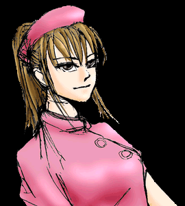

president,editor Macfist
art director Momiji
| 「どうなさいました？」 そのとき不意に呼ばれる声がした。考えることに熱中していたせいか病室に入ってきたことに全く気がつかなかった。話しかけてきたのは例のハーフっぽい看護婦だった。 「お話しがあります。」 いわれるがままに車椅子に乗らされ、長い廊下を進んでいく。軽いベアリングのきしみだけが音を立てている。ふと、気絶する前の光景を思い出した。僕が今見ている看護婦は一体何者なんだろう。天使の様な顔をしていても中身は別ものであることは確かだ。ひょっとして人間では無いのだろうか？馬鹿馬鹿しい。僕自身すら本当の姿ではないというのに・・・。この先は見ためなんて信用しないほうがよさそうだ。それにしても、これだけ院内を進んでいて誰とも会わないというのはあまりにも不自然だ。暗すぎるし、窓もない。時々電灯がクリップすることからも、 普段使われていない所なのかもしれない。大きな鉄の扉を開き、鉄格子の鍵を開けて進んでいく・・・。段々と自分がどこにいるのか見当がついてくると「アッ」っと思わず声をだした。 間違い無い、ここは隔離病棟だ。 「お疲れさまです。しばらくお待ちください。」 胆がつぶれる思いをした。このまま病室に押し込まれるのかと思ったからである。そんな不安をよそに映写室で待つことになった。壁一面がモニターで埋め尽くされていて、放送局の様である。これから何が始まるというのだろう。不安が落ち着きに代わるのと同時に不吉な予感が僕の心の中を満たしていった。待つというのはこんなに心苦しいものだったとは思いもしなかった。刑の執行を待つ死刑囚の気持ちというのはこういうものだろう。時々姿勢を直す看護婦の動きが肌に伝わってくる。特別意識しなくても自分の周りの空気が緊張している事をはっきりと自覚できる。自分が何故これほど緊張しているのか解らなかったが、わざわざこんな所へ連れてくるのだから余程のことに違いない。こちらにも聞くことは山ほどあるのだ。そう思うと緊張は少しずつ静かな憤りへと変化していった。 「藤谷様、お待たせしました。」 ドアが開き、看護婦と一緒にいた女医の姿ともう一人、初めて見る老人の姿があった。 「これを・・・・。」 看護婦は無言で注射器と瓶を受け取ると僕の腕に注射をした。少し落ち着いた気持ちがする。多分、興奮を抑えるためのものだろう。 「初めまして、藤谷さん。我々の事をお話ししましょう。」 老人は丁寧な口調で話し始めた。 「私は当病院の院長、萩尾晩。そちらの女性は坂城結。貴方の隣りの少女は梨紗・オーウェイン。彼女達は体の方の名前だが。」 笑みを浮かべながら萩尾は話し続けた。 「訳あって彼女たちは自ら志願し、私の実験に協力をしてくれた。坂城は恋人との相互の脳移植。梨紗の場合もそうだが元の体は既に存在していない。」 「梨紗の場合は好みがうるさくて困ったがね。」 「ただの変質者じゃないのか？」 僕はわざと大きな声を出した。 「言葉を慎んでくれ給え。我々はそういう言葉に対して非常にデリケートなんだよ。第一、レディに対して失礼ではないか。自分の恋焦がれる人の姿になって自慰をする。行動するときも思考するときも自分の愛する人と一体だ。それは究極のナルシズムではないかね？私の目的は彼女たちの願望を手助けするとかそんなことではない。彼女たちをご覧なさい。美しいでしょう。ベストの状態を維持するため、それ以上年をとらないように管理している。例えば、梨紗の肉体は5年間17才の時から止まったままだ。」 思わず目を疑った。肉体の成長ぶりは立派な大人の女性だが、僕の視線ににっこりと微笑み返すその顔だちはまだ未成年のウブさがある。化粧の下の素顔はまだ17才のままだとしても不思議では無い。恐らくその通りだろう。 「・・・しかしその美しさも永遠とは続かない。肉体には寿命がある。そうなったときはどうするか・・・。わかるかい？藤谷さん？」 「再度、脳を他の体に移植する？」 段々と話しの核心に触れてくることに興奮を抑え切れなくなってきた。 「その通りだよ。そのために君の体を選んだんだ。君の健康な肉体は私の第二の肉体としてふさわしい。脳の大きさも非常によい。クローンを作ってもいいのだが、戸籍がないと社会にでれんのだよ。君の場合身寄りがないのが一番の魅力だがね。二枚目というのも私のニーズに合う。」 「そんな身勝手なことで僕をこんなことに・・・。元に戻してくれ、でなきゃ僕は・・・これから一体どうなるんだ？！今までの人生は何だったんだ？」 「これは別のケースなのだが・・・。」 萩尾は慣れた手つきでモニターのリモコンを操作し始めた。画面には売れっ子のアイドルがでているドラマや、アパートの一室の激しいセックスシーン、雑誌やポスターで美を競うモデル達、グラビアを飾るセクシー女優。汚らしいホームレスやグラビアを見て自慰をする貧乏そうな学生などが写っていた。 「もし、元の自分の姿を見て自慰しているとしたら？」 一瞬、心臓の鼓動が止まった気がした。目の前に昔の自分の体に抱かれている元男がいるのならばそれは不思議ではない。十分、今の僕にとっては現実味あふれる話しだ。 「とても愉快な話しではないか？全く違う立場の人間を入れ替えてしまうんだ。コギャルとオヤジを入れかえるだろ？そうすると、コギャルは気が狂ってどうしようもないが、オヤジは発狂するどころか自慰を始めるんだ。自分がぴちぴちの女子高生になったことに興奮するんだろう。 面白いことにゆっくりと洗脳すると自分の姿を納得していくんだ。そのうち自分の過去も忘れ、社会復帰したコギャルだったオヤジがお金を出して元の自分を買うんだ。たまらなく愉快じゃないか？・・・ハッハッハッ。早くしないと君の今の体が死んでしまう。今のうちに君の次の姿の希望を聞こうじゃないか？」 僕は正気を保てなくなっていた。遊びのつもりでやっているつもりなのだろうか？ひょっとしたら僕の知っている人も餌食になっていて、自分の姿が代わったとしても納得していくのだろうか？ 「これは貴方にとって、チャンスだと思うべきよ。」 ずっと黙っていた坂城が喋り出した。 「例えば今から学生の頃に戻って勉強しなおしたり、金持ちの息子になったり、私のように意中の人に成ることもいいと思うの。男の視線を奪うのも快感に思うはずよ。」 |
 「そうね。かわいい女の子になってとびきりお洒落を楽しんだりするのもいいかもね。男のときよりも楽しいことが多いし・・・。何より男とは違った悦びも感じるし・・・。とびきりの美少年になって私と付き合わない？それがいい！」梨紗が続けて喋り出したが照れ臭かったのか顔が赤かった。 「それなら、すごい二枚目の男になって不倫してほしい！」 調子にのったのか坂城まで変なことを言い出した。電車の中で思ったように女の子に成ることもいいかもしれない。しかし、僕は既に正常な思考を保てないような状態だった。確かに彼女達がいうように、しがないサラリーマンに戻るよりは学生に戻って遊びまくるほうが楽しいことは確かだ。ただ、自分が少女や女性になることには抵抗があった。 「他人の人生を代わりに歩むか、ままの姿で死ぬか、どちらかだ。」 萩尾は強い口調で決断を迫った。僕は正気を保てなくなっていた上に、両側に美女と美少女を抱えより一層思考を鈍らせていた。お互い僕のことでジェラシーが芽生えたらしい。 「少し時間を与えてください。お願いします。」 それが僕が言える精一杯の言葉だった。 坂城と梨紗の二人はそのあとずっと僕にくっついてきた。 「車椅子を押すのは私がやります！」 「私が押してきたんだし、患者の面倒を見るのは看護婦の仕事です！」 初めのうちは微笑ましかったが、だんだんとお互いの興奮が見て取れるように成ってくると僕も二人の険悪なムードに耐え切れなくなってきた。 「まあ・・・二人とも仲良くしなよ。」 この一言で何とか納得したのか言い争いは収まった。しかし、二人とも争いに引かず車椅子のハンドルを片方づつ握っている。 しばらくしてもとの病室につくと、今度はどっちが体を拭くかで争っている。いい加減にして欲しい。 何時の間にか眠っていたらしいが、朝起きてする行動も老人じみてきたような気がする。精神が体に慣れてきたせいだろうか？院長の萩尾が言っていた「自分の姿を納得していく」ということなんだろうか？すぐ手元にある新聞を取るのも億劫になってしまうし、何かをしようという気力も起こらない。他人が僕を見てもありふれた老人にしか見えないだろう。 「少し時間を与えてください。お願いします。」 自分がいった言葉をよく考えてみる。どうすればいいんだろう。自分の希望で体を選んだ梨紗や坂城達は満足感があるだろうが、モニターに写っていたホームレスや学生はどう感じているのだろうか？やっぱり今の姿が自分であると自覚しているに違いはないだろうが、洗脳したとしても突然記憶が蘇って気が狂い、あるいは絶望し自殺することだって有りえないことはないだろう。あるいは脅かすための嘘だったのではないだろうか？そのほうが自然の様な気がする。第一、大人数に脳移植を行うことなんて困難極まりない話しだ。 さて、どうしたものか。あくまで自分の体に固執し駄目なら老人のまま死ぬか、他人に成りすますか・・・。ドアをノックする音がして、ドアが開いた瞬間。まさに言葉を失った。 「おはよう、藤谷君。手術は成功したよ。」 坂城と一緒に入ってきた、もう一人のよく見慣れた顔と声は紛れもなく元の自分の肉体のものだった。最後の希望も無くなった。僕は絶望を通り越し、ただ唖然とするばかりであった。 「40才ばかり若く見えますわ。フフフッ・・・。」 「冗談はよせ。・・・今度は君の番だ。早く答えを聞かせてくれ給え。でないとその体のままで死んでしまうよ。」 萩尾が部屋から出ていったが、坂城が思い出したように振り向き、軽く笑みを浮かべながら言った。 「院長の気持ちが変わらないうちに答えを出しなさい。」 選択肢以外の道。『自殺』という言葉が頭をよぎった。 |
|
|